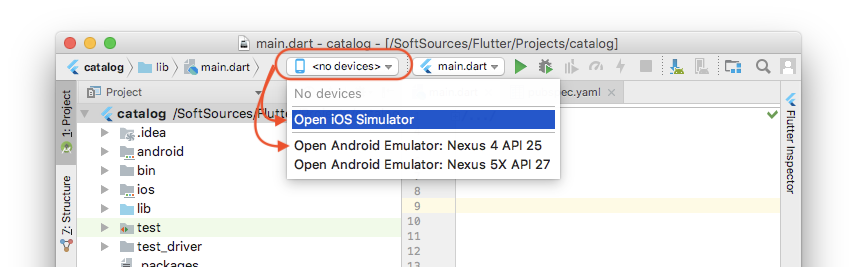

引言
今天在尝试启动flutter项目时碰到了这个问题：
` flutter run No connected devices.`
本篇文章就来记录下解决方案。
解决方案
方案一：检查配置
flutter是个仍在成长的框架，可能出现一些难以排查的bug。如果你之前没有踩过这个坑，在某天突然碰到了，适合进行如下操作。
阿航解决疑难杂症的首选方式三部曲：
- 运行
flutter doctor，检查是否有出错的条目。 - 运行
flutter clean，清除掉缓存等文件。 - 重启IDE（可以选择“清除缓存并重启”）。
- 重启电脑。
方案二：
Android 真机
若要在Android设备上进行调试，Android设备版本需要在 4.1（API 16）以上。
在设备上启动开发人员选项和USB调试。具体步骤请自行百度。
用数据线连接手机和电脑，如果Android设备上出现提示，则授权计算机访问你的手机。
在终端中运行flutter devices命令以验证Flutter是否可以识别你连接的Android设备。
运行flutter run启动你的应用。
安卓虚拟机
- 在计算机上启动VM加速。
- 启动Android Studio > Tools > Android > AVD Manager and select Create Virtual Device.
- 选择要模拟的Android版本，然后下一步。
- 选择你想模拟的一个或多个系统镜像，建议使用x86或x86_64镜像
- 在 Emulated Performance 选择 Hardware - GLES 2.0 以启动硬件加速。
- 验证AVD配置是否正确，然后选择完成。
连接设备
选择IOS或安卓设备：
